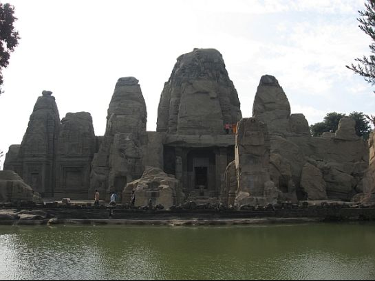
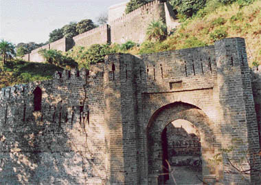
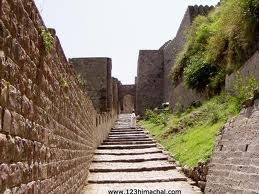
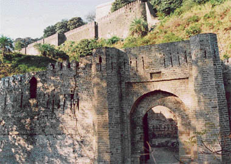
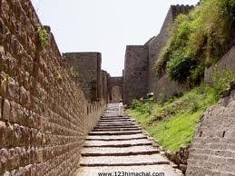
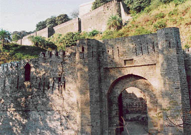
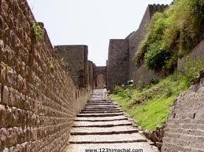

WELCOME TO
KANGRA VALLEY
HISTORY
The Kangra Fort was built by the royal Rajput family of Kangra (the Katoch dynasty), which traces its origins to the ancient Trigarta Kingdom, mentioned in the Mahabharata epic. It is the largest fort in the Himalayas and probably the oldest dated fort in India.
The fort of Kangra was taken by the Mahmud of Ghazni in AD 1009. In 1337, it was captured by Muhammad bin Tughluq and again in 1351 by his successor, Firuz Shah Tughluq. But it was not completely subdued until 1622, when after a siege of fourteen months, it was conquered by the Mughal Emperor Jahangir who garrisoned it with his troops and appointed a Governor to keep the turbulent hill chiefs in check.
In the second half of 18th Century, following the decline of Mughal power, Raja Sansar Chand-II succeeded in recovering the ancient fort of his ancestors, in 1789. But by carrying his ambitions too far he came in conflict with the neighboring hill chiefs, the Gurkhas.In 1804, crossing the Gadwall finally in 1805 the Gorkha army conquered Kangda valley across the Sutlej River after continuous fighting for three years. Till 1809 Gorkha Army conquered Kangda Fort. Subsequently in 1809 the Gorkha army was defeated and they had to retreat across Sutlej River. Concurrently as British East India Company was also in their expansion spree of colonization advanced up to Nepal’s the then border. Finally, with Maharaja of Punjab, Ranjit Singh was the conquerer of Kangra Fort in 1809. It remained in the hands of the Sikhs till 1846 when it was made over to the British Government, along with the surrounding hills. A British garrison occupied the fort until it was heavily damaged in an earthquake in the year 1905.



 

